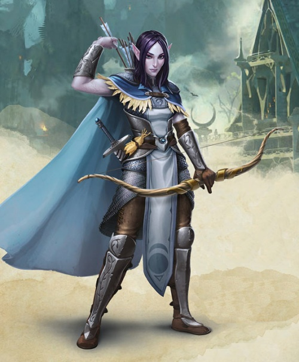

Clerc elfe niv 3
Illydia Maethellyn
Clerc (savoir) 3 (900 PX)
Haut-elfe (f), chaotique bon
Noble
[ CARACTÉRISTIQUES ]
For 9 (-1) Dex 16 (+3) Con 10 (+0)
Int 12 (+1) Sag 14 (+2) Cha 14 (+2)
[ MAÎTRISES ]
Bonus de maîtrise +2
Sauvegardes Sag +4, Cha +4
Compétences Histoire +3, Médecine +4, Nature +3, Perception +4, Perspicacité +4, Persuasion +4, Religion +3 (Perception passive 14)
Armes armes courantes, épée courte, épée longue, arc court, arc long
Armures armures légères et intermédiaires, boucliers
Outils jeu d'échecs draconiques
Langues commun, elfique, nain, céleste, draconique, sylvain
[ COMBAT ]
pv 18 ; DV 3d8
Init +3 ; Vitesse 9 m
CA 15 (chemise de mailles 13, Dex +3)
Épée courte. Corps à corps : +5 (1d6+3 perforant ; finesse, léger)
Arc long. Distance : +5 (1d8+3 perforant ; munitions (portée 45 m/180 m), lourde, à deux mains)
[ SORTS DE CLERC ]
Caractéristique d'incantation Sagesse ; DD de sauvegarde des sorts 12 ; Bonus d'attaque des sorts +4
Sorts à préparer chaque jour 5 ; Emplacements 4 / 2
Sorts à volonté connus 3
- Niv 0 : assistance, flamme sacrée, stabilisation
[ CAPACITÉS & TRAITS ]
Sorts de domaine (identification, injonction, augure, suggestion)
Bénédictions du savoir *
Canalisation d'énergie divine (1/repos)
- renvoi des morts-vivants (DD 12)
- connaissance du passé
Vision dans le noir (18 m)
Sens aiguisés *
Ascendance féerique (AV aux JdS vs charme et la magie ne peut pas vous endormir)
Transe (4h de méditation remplacent 8h de sommeil)
Entraînement aux armes elfiques *
Sort mineur : message (à volonté)
Position de privilège (bienvenu dans la haute société)
[ ÉQUIPEMENT ]
Épée courte, arc long, chemise de mailles, 20 flèches, symbole sacré/reliquaire, potion de soins, sac à dos, couverture, bougie (8), boite d'allume-feu, rations/1 jour (2), gourde, chevalière, vêtements fins, boîte pour l'aumône, bâtonnets d'encens (2), encensoir, habits de cérémonie, lettre de noblesse, bourse
Coût de l'équipement 215.28 po ; Poids de l'équipement 25.75 kg
25 po
Poids des pièces 0.25 kg
[ PERSONNAGE ]
Taille M / 1,66 m / 54 kg ; Âge 94 ans (âge apparent 23)
Yeux bleus ; Peau pale ; Cheveux longs et bruns
Trait Les gens ordinaires m'aiment pour ma gentillesse et ma générosité.
Malgré ma noble naissance, je ne me place pas au-dessus des autres. Nous avons tous le même sang.
Idéal Il est de mon devoir de protéger et de soigner les gens bons.
Lien Rien n'est plus important que les autres membres de ma famille et mes amis.
Défaut Par mes paroles et mes actions, je fais honte à ma famille.
Passé du personnage Illydia est la fille puînée d'un noble seigneur elfique. Elle bénéficia comme son frère aîné d'une éducation nobiliaire complète allant de l'histoire de sa famille au maniement de l'épée ou de l'arc de chasse en passant par la diplomatie et l'apprentissage des langues des peuples amis et ennemis. Elle était maintenant suffisamment d'âge mûre pour comprendre que son frère aîné seul hériterait des titres de son père et qu'elle serait mariée à un noble seigneur elfe. Cela l'enchantait presque, s'imaginant dans les bras du prince charmant de ses contes d'enfant, mais certainement pas dans ceux du fiancé auquel elle était destinée, un mariage de raison avec un puissant seigneur elfe, mais un vieux rustre qui avait dix fois son âge, répugnait ses femmes et avait même tué sa dernière dans un excès de colère. Plutôt se faire moine ! D'ailleurs, ce n'était pas une mauvaise idée...
Une nuit, elle s'enfuit donc de la demeure familiale et de ses forêts elfiques où elle était trop connue pour aller se réfugier dans un de ces monastères où les hommes aiment se reclure. Se furent d'autres années de bonheur, à suivre les offices religieux réguliers prônant l'amour du prochain, à étendre ses savoirs linguistiques dans les vieux manuscrits de la bibliothèque monacale, à connaître les vertus médicinales des plantes cultivées dans le jardin du cloître.
Seul un appel à la protection des plus faibles pouvait venir troubler ce paisible paradis. Et cet appel, il vint d'une véritable croisade menée contre la horde qui menaçait les terres de ses aïeux et celles du monastère. Elle y répondit en fuguant du monastère pour aller rejoindre les troupes sous le commandement du roi du Cormyr.
Et c'est au terme de cette croisade qu'Illydia se retrouve maintenant sur les chemins de l'aventure.
Stat de WotC, histoire de rekk